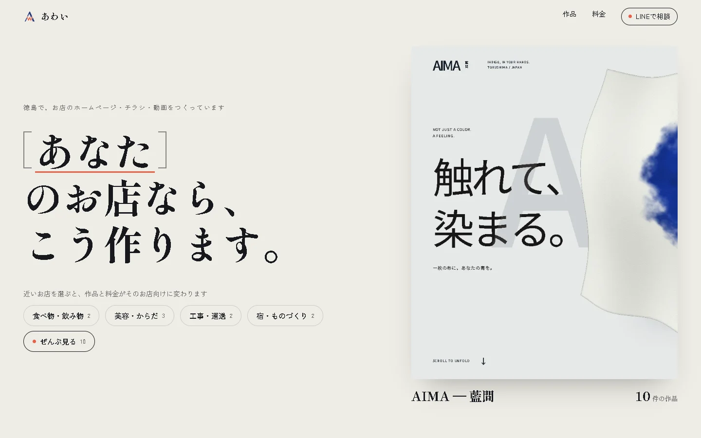
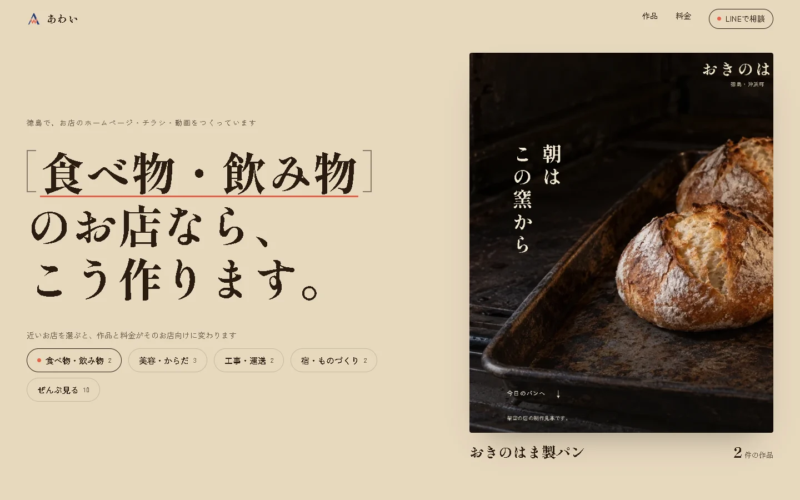
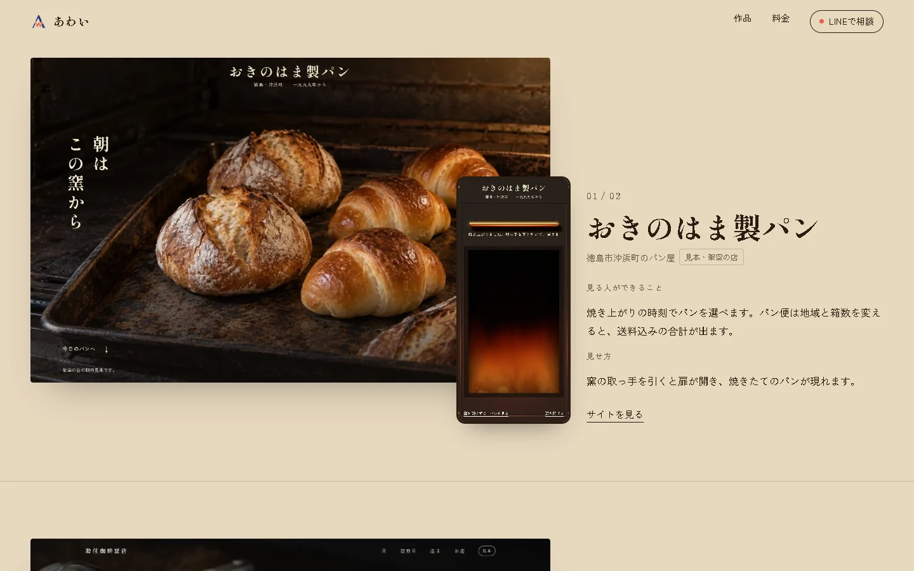
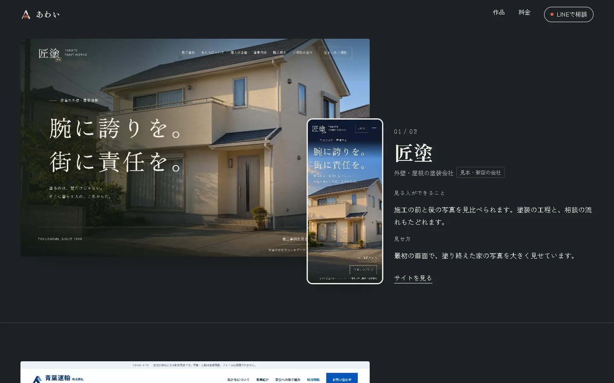
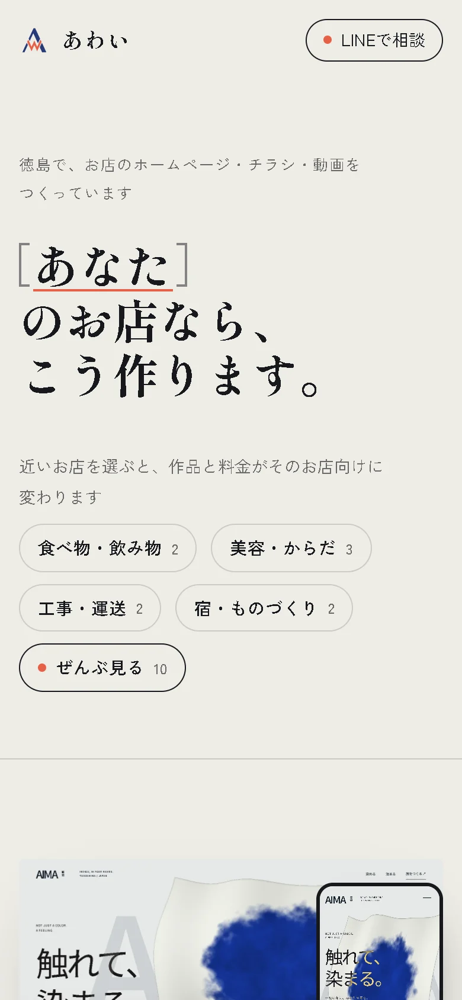
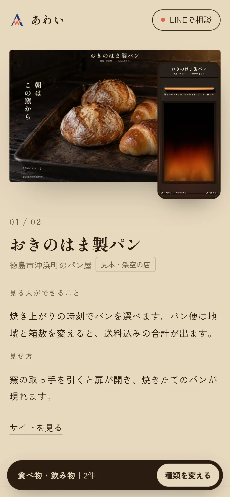
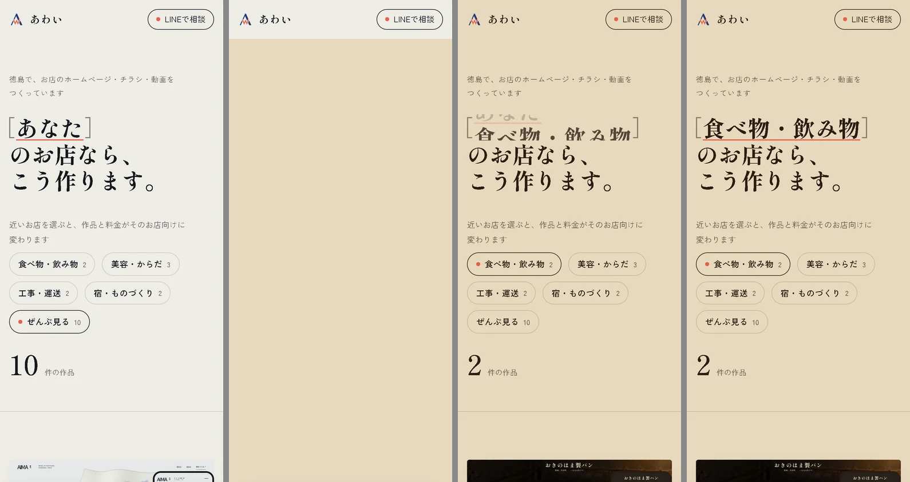

ポートフォリオの見た目案：お店の種類で、ページが切り替わる
2026年11月9日。屋号「あわい」で公開しているポートフォリオ（karisyacho.github.io）の作り直し案です。本番のページは、まだ何も変えていません。
11月8日に見てもらった前回の案は、あわいのロゴマーク（藍のAに朱のWを重ねた形）を入口いっぱいに大きく置くものでした。「大きすぎて邪魔」という返事だったので、今回はページの左上、屋号の横に小さく置くだけにしています。
今回の案では、入口で見る人にお店の種類を選んでもらいます。選ぶとページの背景の色が変わり、いま載せている10件の作品と料金が、そのお店向けのものだけに入れ替わります。見出しの「［あなた］のお店なら、こう作ります。」の括弧の中も、選んだ種類の名前になります。
動く案を開く入口に、お店の種類4つと、10件をまとめて見る「ぜんぶ見る」のボタンがあります。押すと切り替わりを試せますDMを送るときは、最初からお店の種類を選んだ状態で開くリンクも使えます。下の4つは、入口で選べるお店の種類です。
入口（PC）
左が見出しと選ぶボタン、右がその種類でいちばん近い作品です。上が最初の状態、下が「食べ物・飲み物」を選んだ後です。


作品の場面（PC）
作品は1件で1画面を使います。パソコンとスマホの画面を重ねて見せ、横に「見る人ができること」と「見せ方」を書いています。工事・運送を選ぶと、背景は暗い色になります。


スマホ
スマホでは、下にずっと小さな帯が出ます。今どの種類を見ているかと件数が分かり、そこからお店の種類を選び直せます。


切り替わりの流れ（スマホ）
左から順に、押す前、押した直後、色が変わった直後、止まった後です。押した直後は中身がいったん消えます。押したボタンの位置から次の色が丸く広がり、その後で新しい作品と見出しが現れます。全部で1秒ほどです。

本番で足すもの
- 作品の場面は、いまは最初の画面の写真だけです。本番では、パン屋の見本サイト「おきのはま製パン」で窯の扉が開くところのような、触ったときの動きを短い動画で見せます。
- 料金の全部、よくある質問、つくっている人の紹介、お店がスマホでGoogleの表を直すとホームページの営業時間が変わる見本は、今の内容を残したまま、この見た目に合わせます。
- 「月1回、見た人の数と問い合わせの数を送る」は載せていません。「やめても、サイトとアドレスはお店に残る」も、載せてよいか返事をもらうまでは載せません。